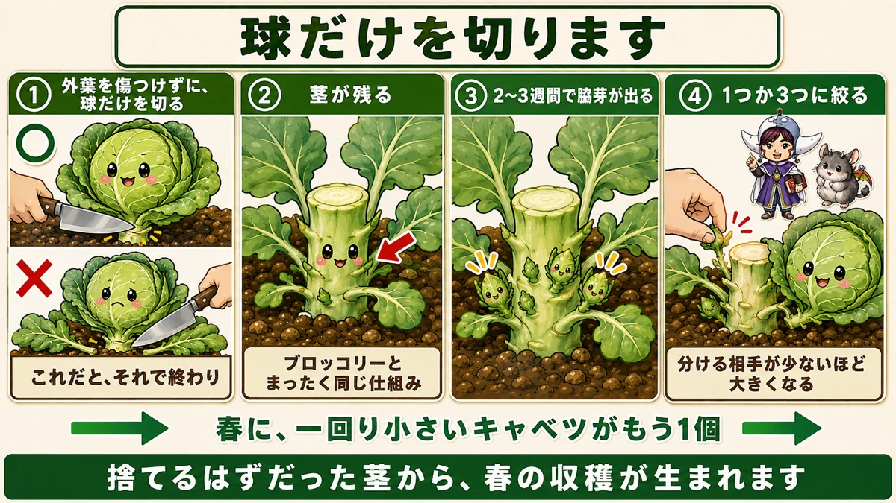
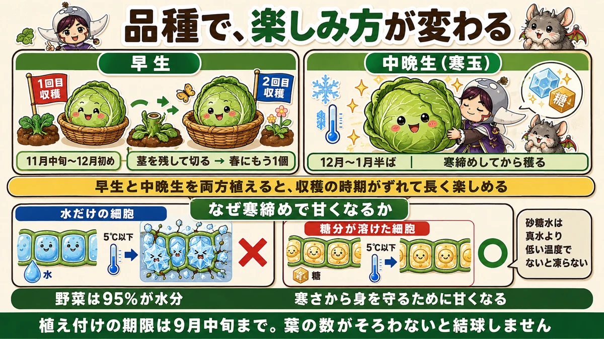
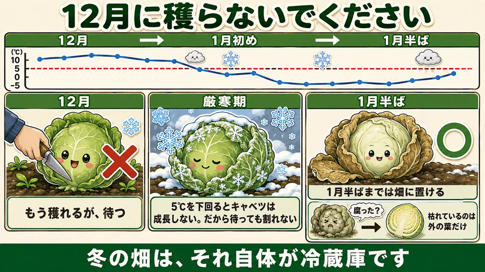

茎を残して切ると、春にもう1個穫れます🥬 1株から2回

🥬「1株から1個。それで終わりだと思っていた」
🥬「12月に穫ったほうがいいのか、待つべきか」
🥬「外葉が枯れてきた。腐るのでは？」
どうも、8150（えいこう）です🌱 家庭菜園歴8年、理科の教員免許を持っていて、有機・無農薬で野菜を育てています。
前回、秋の虫の話でキャベツが出てきました。今日はそのキャベツ本体の話です。
先に、この記事でいちばん言いたいことを言っておきます。
★キャベツは、切り方を変えるだけで、春にもう1個穫れます。
★1株から2回。特別な道具も肥料も要りません☺️
★★茎を残して、切ってください
普通の収穫と、何が違うのか
キャベツを収穫するとき、多くの方はこうします。
★株元からザクッと、まとめて切る。
これでも問題ありません。★でも、それで終わりになります。

★食べる部分だけを、切ります
やり方を変えます。
★食べる部分（球）だけを、茎から切ってください。
ポイントは1つです。
★★まわりの外葉を、傷つけないように切る。
外葉はたくさんついています。それを残したまま、★中の球だけをすっと外す。ここがいちばんのコツです。
★すると、茎が残ります
切ったあと、地面を見てください。
★短い茎が残っています。
そして★その茎には、葉の付け根がいくつもあります。
★★ブロッコリーと、同じ仕組みです
ここで思い出してほしいことがあります。
★ブロッコリーは、頂花蕾を穫ったあと、脇から次々にわき芽が出てきますよね。
★キャベツも、まったく同じです。
茎は短いですが、★葉の付け根から脇芽が出てきます。
★3つも4つも、出てきます
そのまま置いておくと、どうなるか。
★2〜3週間で、芽が出てきます。
そして★3つも4つも、小さいキャベツができはじめます。
★1つか3つに、絞る
全部育てると、どれも小さいままです。
★1つ、あるいは3つくらいに絞ってください。
前にじゃがいもの芽かきの話をしました。★あれと同じ考え方です。★分ける相手が少ないほど、1つあたりが大きくなります。
★春に、もう1個穫れます
絞って育てると、どうなるか。
★春に、一回り小さいキャベツがもう1個穫れます。
★最初に穫ったサイズまでは育ちません。一回りか二回り小さいものになります。
でも★1株から2回穫れる。これは大きいです。
★捨てるはずだった茎から、春の収穫が生まれます。
早生と、中晩生
★種類で、楽しみ方が変わります
キャベツには、大きく2つのタイプがあります。

★早生（わせ）… 11月中旬から12月初めに収穫
こちらは、★さきほどの「茎を残す」方法が向いています。
早く穫れるので、そのあと春まで時間があります。★脇芽を育てる余裕があるんです。
★中晩生（なかおくて）… 12月から1月半ばに収穫
こちらは、通称★寒玉（かんだま）と呼ばれます。
★こちらには、別の楽しみ方があります。
★★寒玉は、12月に穫らないでください
待つと、おいしくなります
これが2つ目の話です。
★12月に入って、もう収穫サイズになっている。
★そこで穫らないでください。

★厳寒期を十分に経験させてから収穫すると、ずっとおいしくなります。
★割れる心配は、ありません
「待っていたら、割れるのでは」と心配になりますよね。
★大丈夫です。
★気温が5℃を下回ると、キャベツは成長しません。
成長が止まっているので、★中から押し広げる力が働きません。だから割れない。
★寒さが、そのまま「保存装置」になっています。
★外葉が枯れても、大丈夫
もうひとつ、心配になることがあります。
★外の葉が枯れてきて、色が変わってきます。
これを見ると「腐ってきたのでは」と思ってしまいます。私も最初はそうでした。
★心配ありません。
★枯れているのは外の葉だけです。★その葉を1枚剥けば、中はちゃんときれいなキャベツです。
★1月半ばまで、置けます
期限もはっきりしています。
★1月の半ばくらいまでは、畑に置いておけます。
前に大根の記事で、「★冬の畑は、それ自体が冷蔵庫」とお伝えしました。
★キャベツも同じです。畑に置いておくのが、いちばんいい保存方法になります。
★なぜ、寒いとおいしくなるのか
前に一度お話ししました
冬の野菜が甘くなる話を、前にしました。復習になりますが、大事なので書きます。
★5℃以下になると、水は凍りはじめます。
そして★野菜は、95%が水分です。
★細胞の中で凍ると、死にます
もし細胞の中の水が凍ったら、どうなるか。
★氷の結晶が細胞を壊して、その部分は死んでしまいます。
野菜にとっては、命に関わることです。
★★だから、糖分を増やします
そこで、野菜はある対策をとります。
★水に糖分を溶かして、凍りにくくします。
砂糖水は、真水より低い温度でないと凍りません。★塩をまくと道路が凍らないのと、同じ理屈です。
★寒さから身を守るために甘くなる。それを人間がいただいている。
★寒玉を待つというのは、この仕組みを利用することです。
キャベツでも、同じでした
前に話したときは、ほうれん草や小松菜の例でした。
★キャベツでも、まったく同じことが起きています。
★冬の野菜は、みんなこの方法で生きのびています。
2つの楽しみ方を、両方やる
品種を分けて植える
私のおすすめは、これです。
★早生と中晩生を、両方植えておく。
- ★早生 … 11月から12月に穫って、茎を残す → 春にもう1個
- ★中晩生 … 12月から1月半ばまで待って、寒締めして穫る
★収穫の時期がずれるので、長く楽しめます。
前にきゅうりの記事で、「★3回に分けてまくと秋まで穫れる」とお伝えしました。★キャベツも、品種を分けることで期間を伸ばせます。
植えるのは、9月中旬まで
どちらの場合も、★植え付けの期限は変わりません。
前回お話ししたとおり、★9月中旬までに植え付けを終えてください。
★葉の数がそろわないと、そもそも結球しません。
1株を、最後まで使い切る
この記事の要点
- ★★食べる部分（球）だけを茎から切ると、春にもう1個穫れる
- 切るときは★まわりの外葉を傷つけないように
- ★茎を残すと、葉の付け根から脇芽が出てくる
- ★★ブロッコリーとまったく同じ仕組み
- ★2〜3週間で芽が出て、★3つも4つも小さいキャベツができる
- ★1つか3つに絞る。★分ける相手が少ないほど大きくなる
- ★春に、一回り小さいキャベツがもう1個穫れる
- ★早生は11月中旬〜12月初め。★茎を残す方法が向いている
- ★中晩生（寒玉）は12月〜1月半ば。★寒締めして穫る
- ★★寒玉は12月に穫らずに待つ。★厳寒期を経験させるとずっとおいしくなる
- ★5℃を下回るとキャベツは成長しない。★だから待っても割れない
- ★外葉が枯れて色が変わっても心配ない。★1枚剥けば中はきれい
- ★1月半ばまで畑に置ける。★冬の畑は、それ自体が冷蔵庫
- ★5℃以下で水は凍りはじめる。★野菜は95%が水分
- ★細胞の中で凍ると、氷の結晶が細胞を壊す
- ★★だから糖分を増やして凍りにくくする。★寒さから身を守るために甘くなる
- ★早生と中晩生を両方植えると、収穫の時期がずれて長く楽しめる
- ★植え付けの期限は9月中旬まで。★葉の数がそろわないと結球しない
全部やろうとしなくて大丈夫です。まずは今年、★1株だけ「球だけを切る」やり方を試してみてください。2〜3週間後に、茎から芽が出てきます🥬
次回は、ほうれん草の話。発芽させられるかどうかが、すべてです🥗
ここまで読んでくださって、ありがとうございました。
防虫ネット
キャベツは虫との勝負です。植えたその日からかけておくのがいちばん確実です。
![[商品価格に関しましては、リンクが作成された時点と現時点で情報が変更されている場合がございます。]](https://hbb.afl.rakuten.co.jp/hgb/56bc205d.0066fedc.56bc205e.af56d163/?me_id=1260467&item_id=10000299&pc=https%3A%2F%2Fthumbnail.image.rakuten.co.jp%2F%400_mall%2Fmarsol-morishita%2Fcabinet%2Fshouhinn%2Fbouchuu%2Fimgrc0090950099.jpg%3F_ex%3D240x240&s=240x240&t=picttext "[商品価格に関しましては、リンクが作成された時点と現時点で情報が変更されている場合がございます。]")

アーチ支柱
ネットが葉に触れないよう、高さを出して張ります。

炭化けいふん
結球が始まるころの追肥に。速効性で、巻きはじめを後押しします。
![[商品価格に関しましては、リンクが作成された時点と現時点で情報が変更されている場合がございます。]](https://hbb.afl.rakuten.co.jp/hgb/55e7612a.7de1526b.55e7612b.01a50904/?me_id=1214866&item_id=10002182&pc=https%3A%2F%2Fthumbnail.image.rakuten.co.jp%2F%400_mall%2Fkaju%2Fcabinet%2F00714580%2F03462454%2F07486601%2Fimgrc0071643813.jpg%3F_ex%3D240x240&s=240x240&t=picttext "[商品価格に関しましては、リンクが作成された時点と現時点で情報が変更されている場合がございます。]")
剪定ばさみ
球を切るとき、茎を残して切ります。よく切れるほうが切り口が傷みません。

あわせて読みたい